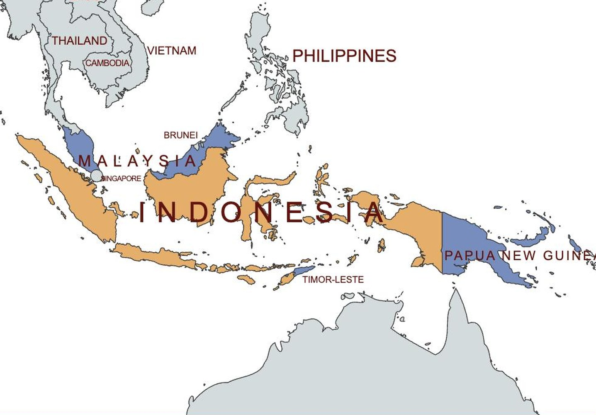
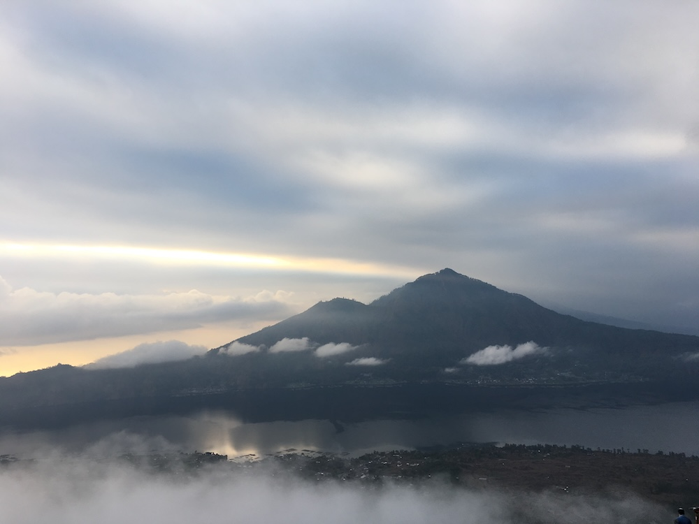
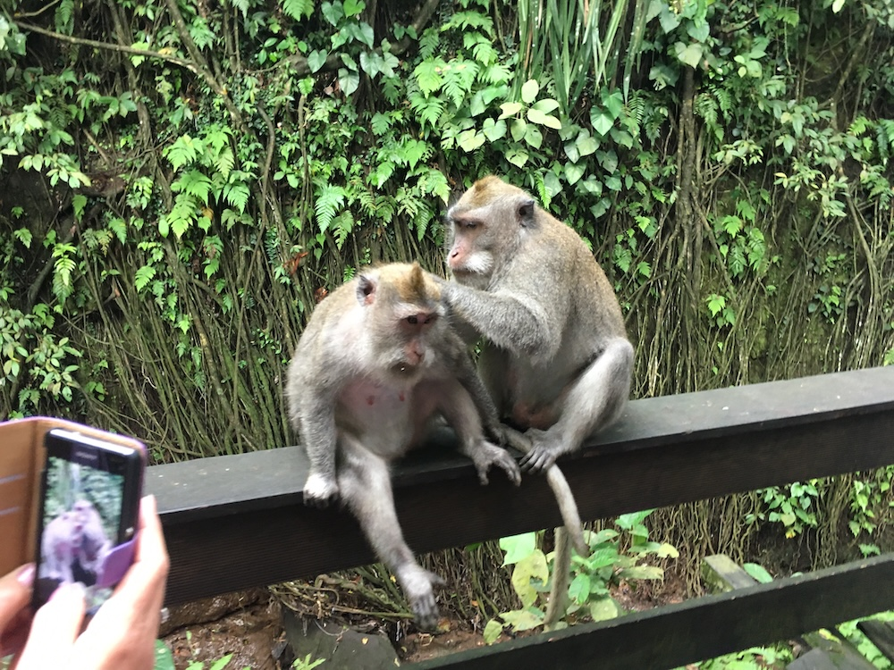
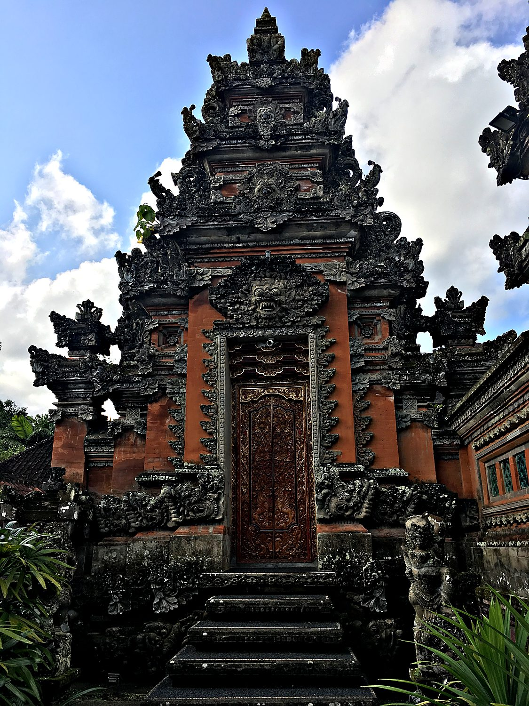

I visited Bali with my mother in August 2018, and the island wasted no time introducing itself. A few hours after landing, we were changing money when the ground began to roll beneath us. This was our first earthquake, and I seized the moment to tease my mother mercilessly for not sharing my delight. My glee faded the next day, when I learned that the same seismic activity had struck nearby Lombok with tragic force, with over 500 people killed. It was a sharp early lesson that the beauty of this volcanic archipelago is inseparable from its danger. From there we settled into gentler pleasures: monkeys, rice terraces, temples, and a pre-dawn scramble up a live volcano.
We based ourselves in Ubud, the green, quiet town that serves as the cultural heart of Bali. To understand Bali you have to understand that it is the great exception within Indonesia. The country is the world's largest archipelago and the most populous Muslim-majority nation on earth, yet Bali remains devoutly Hindu, its landscape studded with temples and its days ordered by ritual. The reason is a kind of historical time capsule. When Islam spread across neighbouring Java centuries ago, the Hindu elite of the old Majapahit empire retreated to Bali, and their religion and culture have flourished on the island ever since. Bali was the first tourist trap that I had visited yet considered fully worth it despite the crowds. That being said, from what I have heard it has gotten way worse since I was there, so the sheer volume of tourists may be insufferable now.

Indonesia's islands were once home to great Hindu-Buddhist kingdoms like Srivijaya and Majapahit, whose influence stretched across maritime Southeast Asia. From the 13th century onward Islam arrived with traders and gradually became the dominant faith across most of the archipelago. Then came the Europeans, drawn by the fabulous wealth of the spice trade, and the Dutch eventually welded the sprawling islands into a single colony they called the Dutch East Indies. The territory was governed for the profit of distant shareholders, its nutmeg, cloves, and coffee flowing outward for centuries.
Indonesian nationalists proclaimed independence in 1945, in the wake of the Japanese occupation, and secured it after a hard four-year struggle against a returning Dutch army. The result is one of the most diverse nations on the planet, spanning thousands of inhabited islands and hundreds of languages, held together by a shared national language and the motto "Unity in Diversity." All of it sits along the Pacific Ring of Fire, which gives Indonesia both its extraordinarily fertile volcanic soil and its earthquakes. The flag is simplicity itself, a band of red over white, with the red standing for courage and the white for purity. Today, Indonesia is a major exporter of natural resources like palm oil and coal, a rising economic powerhouse, and a core member of ASEAN.
One of the trip's highlights was hiking Mount Batur, an active volcano in the island's northeast, which I climbed in the dark after leaving the hotel at 2am on no sleep. The reward was a summit sunrise, with clouds parting to reveal the neighbouring peak of Mount Agung, Bali's highest and holiest mountain, which had erupted just before we arrived. Steam still curled from vents near the top, a reminder that this is a living, breathing piece of the earth. Coming down, we stopped at a plantation to sample the infamous local coffee called the “cat-poo-chino”. The locals feed coffee beans to luwaks, cute ferret-like creatures, that digest them and shit them out. The resulting coffee is extremely strong and tasty. I remember praying that the beans were cleaned before being served to us.

A short walk from town lies the Sacred Monkey Forest Sanctuary, a shaded temple complex overrun by several hundred long-tailed macaques. The monkeys here are far more relaxed than the aggressive troops I had met in India, and I finally achieved a long-held dream of having one clamber onto me for a photo. It promptly tried to steal my hat, which felt like a fair transaction. The baby monkeys were especially adorable. Beneath the antics, the forest is a genuine religious site, its mossy temples and statues reminders that in Bali the sacred and the everyday are never far apart.

Everywhere in Bali you encounter the pura, the island's Hindu temples, marked by their distinctive split gateways that seem to cleave a single tower cleanly in two. Their dark volcanic stone, carved into gods and demons and draped in offerings, is the physical expression of the Balinese Hindu faith that sets the island apart from the rest of Indonesia. Daily life here is punctuated by small woven baskets of flowers and incense left on doorsteps and shrines. It is this unbroken thread of living ritual, as much as the beaches and rice fields, that gives Bali its magic. We also watched a vibrant Balinese dance ceremony, and it was cool to see similarities between it and the Bollywood dances that are common in Indian movies – though the one we saw in Bali was less cheesy!
